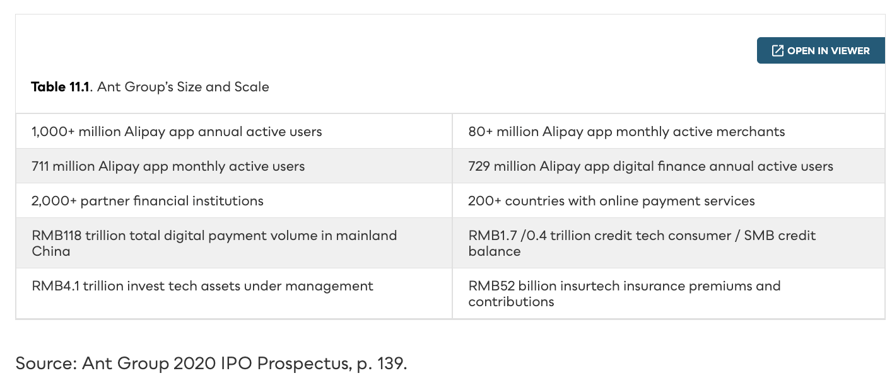

Techfins & Bigtech
The biggest threat to incumbents isn’t the agile fintech start-up — it’s the platform giants. Alibaba, Tencent, Amazon, Apple, Facebook, and Google bundle finance into ecosystems with billions of users.
Not start-ups — tech platforms.
Early forecasts had agile fintechs disrupting finance. They mostly haven’t: customer acquisition is costly, regulators scrutinize, and incumbents fought back. The real disruptors are the global technology companies — techfins (Alibaba, Tencent) and bigtech (Amazon, Apple, Facebook, Google).

Customer-centric, not product-centric.
Techfins and bigtech don’t sell financial products to make a profit. Finance is an enabler — a loss leader to attract and retain users. Profits come from network effects and the other sides of their multi-sided platforms.
Alibaba builds mobile payments.
China had few cards and an underdeveloped payment system. Buyers feared sellers wouldn’t deliver. Alipay (2004) — modeled on PayPal — charged no fees and held payments in escrow until goods arrived, building trust in e-commerce. It wasn’t a revenue strategy; it solved customer pain points.
Beyond payments, one void at a time.
Users held large idle balances; merchants couldn’t get loans; consumers had no credit scores. Alipay built a product for each gap.
Ant Group: a full-service intermediary.
Spun out ahead of the 2014 IPO, Ant Financial added consumer lending (Hua Bei), wealth (Ant Fortune), insurance (Ant Insurance, 80+ partners), equity crowdfunding (ANTSDAQ), and global payments — managing customers’ “FinLives.”

The red envelope that went viral.
Tencent (1998) built QQ messaging, then WeChat. TenPay (2005) stalled until the WeChat Red Envelope at 2014 Lunar New Year — 40M+ digital envelopes, peaking at 4.8M users at midnight — made WeChat Pay viral.
Amazon builds a bank for itself.
Amazon was first into finance (2007), building internally through trial and error to support its marketplace — not to become a conventional bank. Three core products: payments, merchant loans, and cash accounts.
Amazon Lending (2011) — invite-only merchant loans of $1K–$750K (line of credit to $1M) with Bank of America and Goldman Sachs; rates reportedly 7–21%.
Amazon Cash (2017) — cash deposits via CVS, 7-Eleven, and Coinstar kiosks for the unbanked.
Embed banking into the ecosystem.
Apple partners with banks rather than building alone. Apple Pay (2014) uses NFC, tokenization, and biometrics — and Apple emphasizes that it doesn’t collect your purchase history.
Facebook faces the regulators.
Reboot after reboot.
Platforms, brands, and data.
Mixed success — same playbook, different outcomes.
Chinese techfins succeeded by filling institutional voids — payments, credit, wealth, insurance — always working with domestic banks. North American bigtech built strong payments footholds but, outside partnerships, faced regulatory opposition and poor product-market fit.
Platforms first, finance second.
Chinese techfins filled real institutional voids and grew organically — but always with the banks, and only at home and in similar emerging markets. North American bigtech mastered payments yet stalled beyond them, blocked by regulators and product-market fit. The likely future isn’t displacement — it’s bigtech-bank partnerships that pair scale and compliance with technology and customer focus.